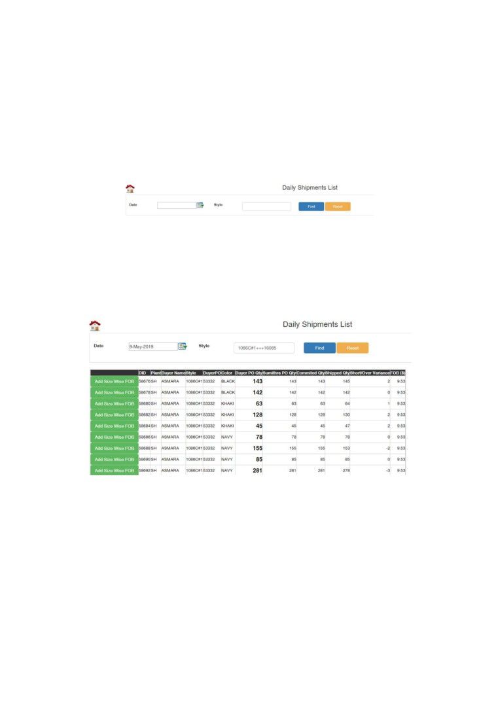

FOB Management Console
User Guide
Page 1
Contents
No.
Chapter
Page No.
01
Introduction
01
02
Logging in to the system
02
03
Size wise FOB
04
04
Size wise FOB Approval
06
05
Report View
07
06
FAQ
08
Page 1
1. Introduction
The document explains all about the FOB Management Console from the
basics. This document is intended to provide the knowledge that is necessary
for a user who has no knowledge about this system before.
It is highly recommended for the system users to go through the user guide
before they start using the system which will sort out the majority of their
problems.
Also, the document comprises of a FAQ (Frequently Asked Questions) section
which has the answers for the commonly faced problems by the system users.
Page 1
2. Logging in to the system
The below given steps shows on how the user can get in to the FOB
Management Console using APMaS.
Step 1:
Go to APMaS.lk and enter the login credentials
Step 2:
Search for MSP in the APMaS search bar
Step 3:
Click on the MSP Management Console
Page 2
Step 4:
By scrolling down to the bottom of the page click on the ‘FOB Management’
link which could be seen in pink as in the below given screenshot.
Finally you will get into the FOB Management page as shown below.
Page 3

3. Size wise FOB
Clicking on the ‘size wise FOB’ page will direct you to a page as shown in the
below screenshot. Size wise FOB is a page used to add/ adjust the size wise
FOB of a particular style. The below given steps will guide you on how this
could be achieved.
The user must can search the shipments either using the date or the style
number. Afterwards a screen similar to the below screenshot will be generated
by the system.
A table will be visible to the user displaying the details of the shipment along
with the ‘Add Size Wise FOB’ button. The table shows data like the style
number, PO Qty’s and the FOB etc.
The user must then click on the ‘Add size wise FOB’ button and a screen will
be displayed as shown in the below screenshot.
Note: If the new FOB is already placed, it wont show up on the daily shipment
list
Page 4
Here the user will have to enter the new FOB quantities and click on the save
button to send it for approval. If the new FOB value is less than the costing
FOB, the request will be sent for approval. If in case the new FOB value is
more than the costing FOB, the values will be directly updated without the
ended of any approval.
Page 5
4. Size wise FOB Approval
This is an exclusive view for the financial controller to accept and reject the
requests that were made from the previous step. Once the user clicks on the
size wise FOB Approval button a screen similar to the below screenshot will be
visible to the user.
Here the user could review the request that are made by the merchandisers by
clicking on the ‘+’ button which is placed on the left side of the table. Afterwards
a screen similar to the below screenshot will be visible to the user.
Here the user will be able to see the new FOB values requested by the
merchandiser which are below the current FOB Qty. After reviewing the
changes requested, the financial controller can either accept or reject the
request along with a comment. If the request is rejected, the user who made
the request will an email notification along with the comments made by the
financial manager.
Page 6
5. Report View
Report View is designed for the convenience of the users. Once the user clicks
and enters into the size wise FOB report page, the user can enter the date and
style number and click on the find button to load the results. Afterwards a
screen similar to the below screenshot will be displayed the user.
Clicking on the (+) button on the left side of the column will show you a detailed
result.
Page 7
6. Frequently Asked Questions (FAQ)
1.
How can I request a new size Wise FOB ?
a) A new size wise FOB can be requested by the user by following the
steps in the page 4
2.
Why aren't some of the styles not showing up in the daily shipment list ?
a) The FOB might already be entered to the system.
b) The FOB’s with a value less than the costing FOB’s might still have a
pending approval of the financial controller.
c) The style would have not been dispatched yet.
d) The delivery would not have been scheduled from the commercial
department.
3.
How can I check the if it is dispatched or not?
a) Go to MSP >> Click on Report View >> Click on other reports >> Click
on style wise history
b) Then enter the style number and click on the search button
c) Afterwards click on the ‘MSP Schedule button’ and check for the
status in the table.
d) If the status is pending, the shipment is not yet made. If the status is
shipped, the shipment is sent.
4.
How can I view the previously entered FOB’s ?
a) The previously entered FOB’s can be requested by the user by
following the steps in the page 4
Page 8